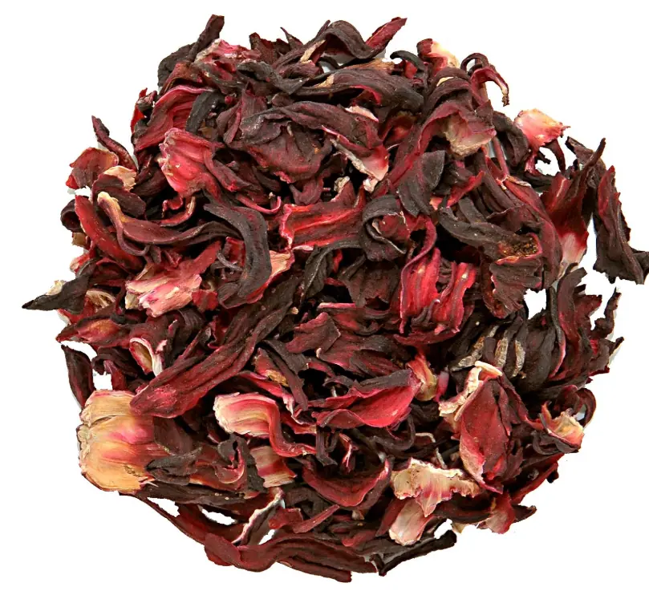

Priority sourcing · Nigeria
Dried hibiscus flowers
Full dried hibiscus product information →
Dried roselle calyces (zobo) for tea, beverage and botanical ingredient applications.
Availability and grade subject to sourcing confirmation.
Buyer-defined moisture, colour, cleanliness, pesticide and microbiological testing.
Request hibiscus specification →